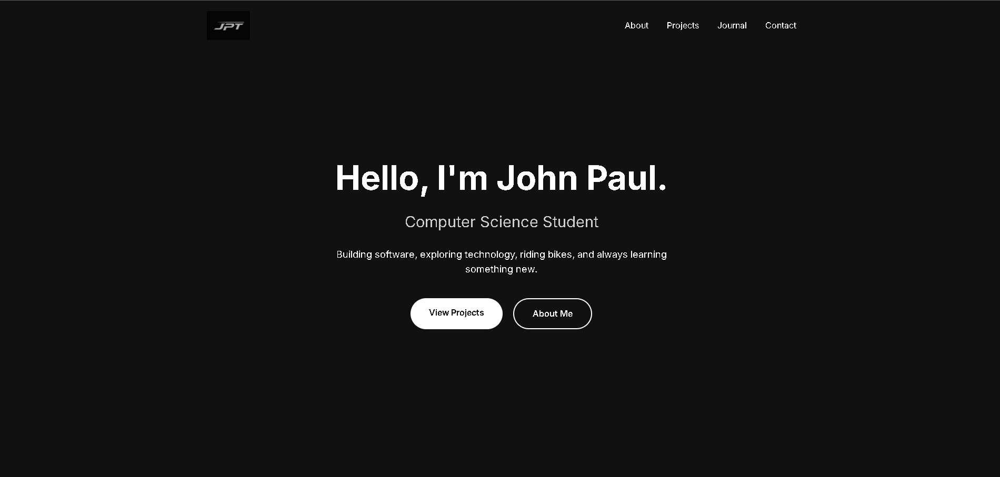

July 16, 2026
Building My Portfolio Website
I am thinking of many projects to accomplish there are so many ideas that I have created some are started some are not. The only issue that I have is sometimes I cannot finish what I have started.